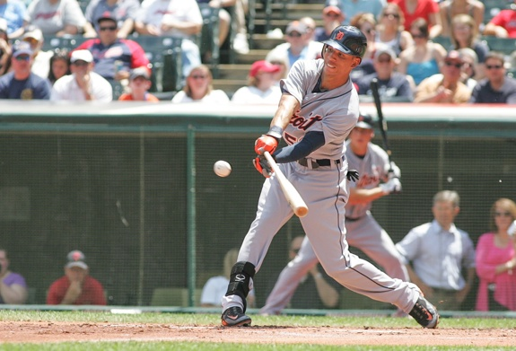
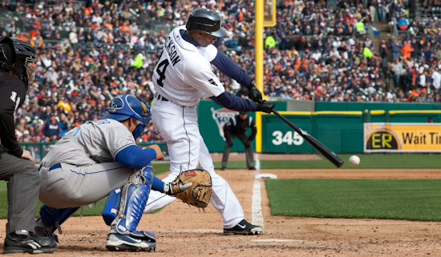
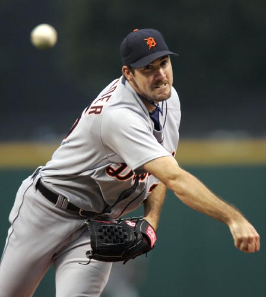
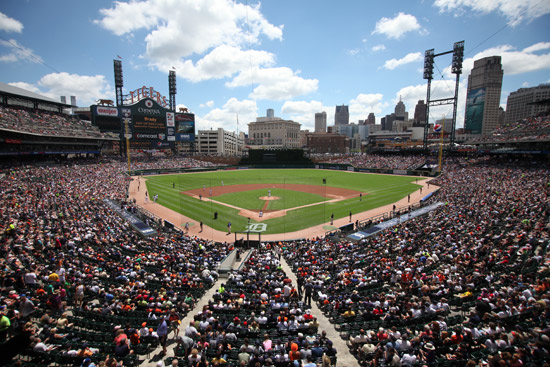

|
Quintin Berry to be honored at 2013 Baseball Dinner Birminham's Townsend Hotel site for 12th annual dinner, set for Jan. 26, 2013 One of the Tigers' fan-favorites from their 2012 World Series season highlights the 12th annual Detroit Baseball Dinner, a warm and intimate evening of friendship, fellowship and baseball set for 6 p.m., Jan. 28, at The Townsend Hotel, 100 Townsend St., in Birmingham.  Quintin Berry takes aim at the ball during a mid-season game against the Cleveland Indians.
Quintin Berry, an outfielder whose fleet ways and early-season hitting helped the Tigers to a long post-season run, is the second recipient of The Tenth Man Award, presented by The Detroit Baseball Society. The award honors a Tigers player who is not typically a lineup regular but whose contributions made him particularly valuable during the previous season. Why a Baseball Dinner? Times and traditions change. Media members, particularly, recall that late January was, for years, a special time on Detroit’s baseball calendar.  A lavish Thursday evening party sponsored by the
Detroit Tigers was always one of the winter’s classy affairs.
One night later it was customary for the Detroit Baseball Writers to
convene for dinner and conversation with Tigers brass, the team’s
manager, assorted players, etc., as part of an unofficial beginning
to the upcoming baseball season.  About the Dinner That a baseball community as rich and as historic as Detroit’s
should celebrate its heritage by doing what baseball has always succeeded
best in achieving over 150 years in America -- bringing people
together in a spirit of pleasure and friendship so that a common interest,
baseball, can be celebrated and shared. Reservations only. Please call 248-562-7130. The price is $125 per person, and checks are to be made payable to: Detroit Baseball Dinner. Reservation deadline is Jan. 21. Please mail checks to:  |
|